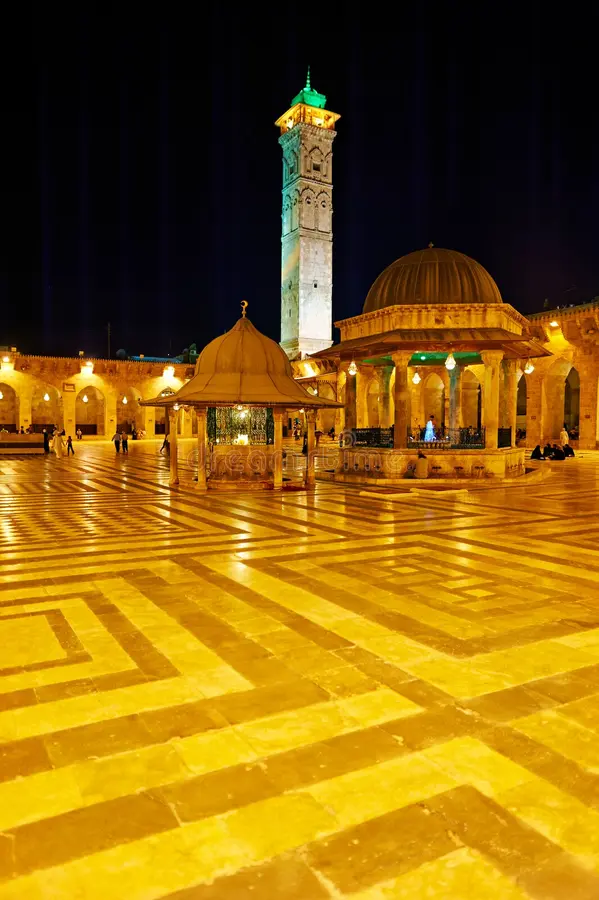

Multimédia
Nesta página encontra conteúdos multimédia sobre Alepo.

Alepo: cada pedra conta uma história.
Alepo em movimento
Descubra Alepo em vídeo.
Fotografias



Vídeo
Alepo, uma cidade de histórias
Poesia
Alepo guarda histórias nas suas ruas,
Entre pedras antigas e manhãs azuis.
O vento leva memórias pela cidade,
E cada esquina fala de saudade.